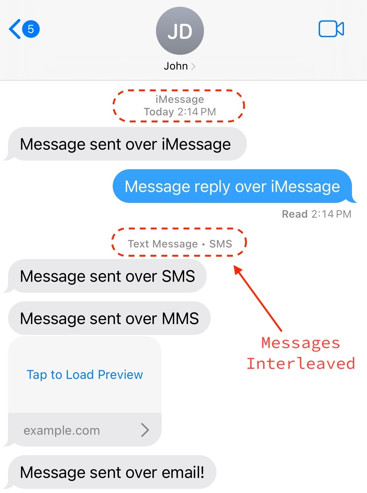
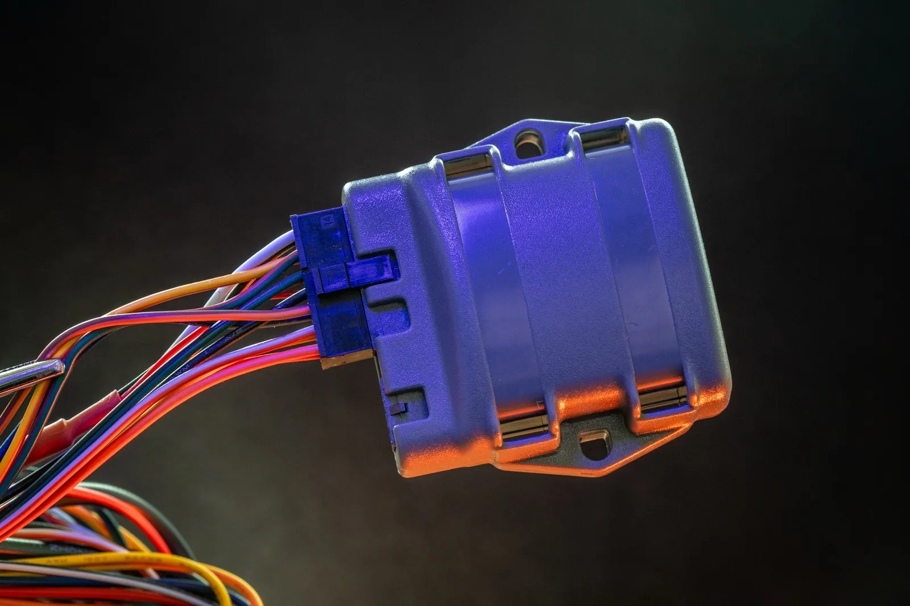
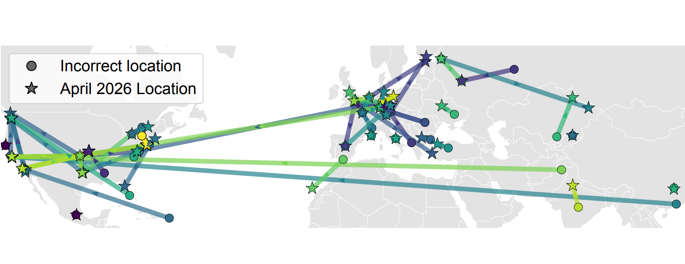
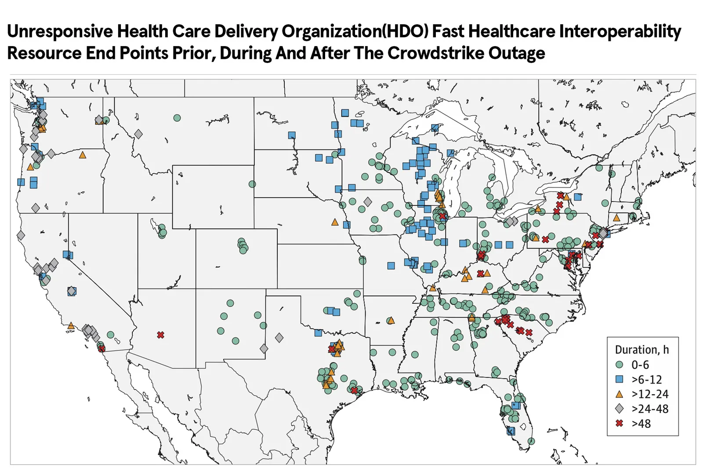
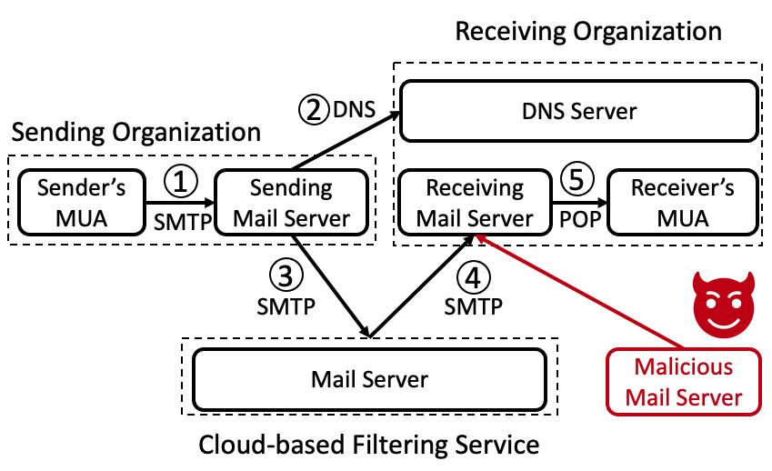
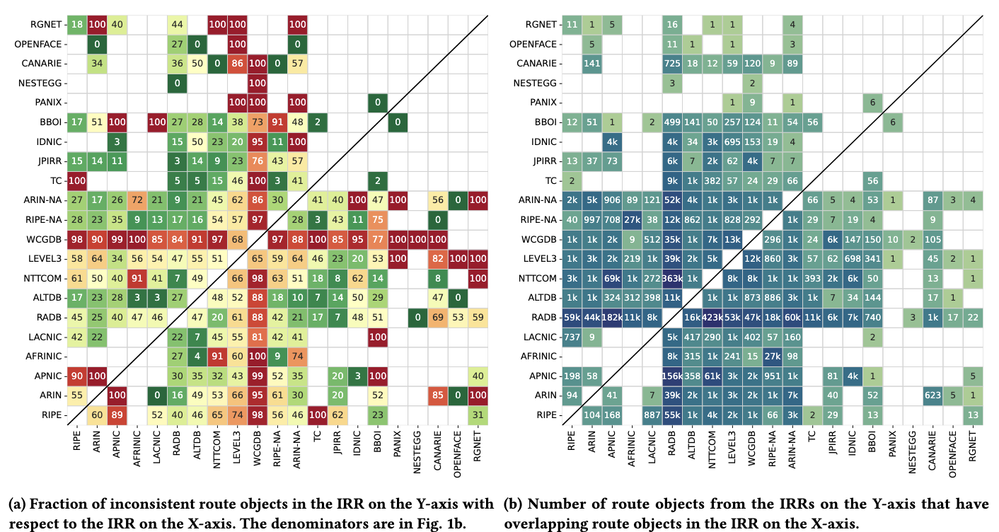
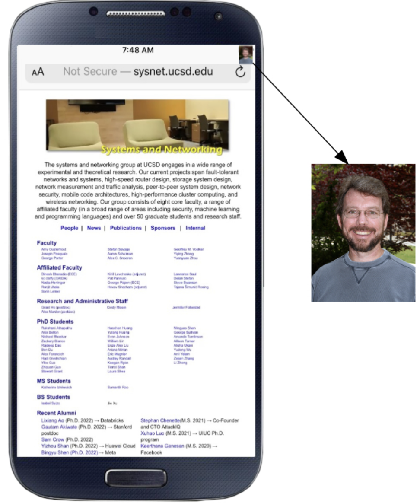
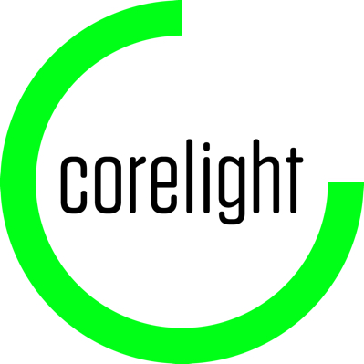

I am a PhD student in the CSE Department at UC San Diego. I'm fortunate to be advised by Stefan Savage and Geoff Voelker.
I study cybersecurity problems through large-scale empirical measurement. My work spans threats to the systems we rely on every day: the security of email systems (Oakland'26, WWW'24), aftermarket automotive remote-control systems (USENIX Security'26), and the impact of large-scale IT outages on hospital patient care (JAMA'25). I'm a member of the Sysnet and CryptoSec research groups at UC San Diego. My hometown is Bangalore (ಬೆಂಗಳೂರು), India.







*Equal contribution.

- 2026. CSE Doctoral Award for Excellence in Service and
Leadership, UC San Diego.
- 2026.
Distinguished Paper Award,
IEEE Symposium on Security and Privacy (Oakland)
- 2026. Finalist, CSAW Applied Research Competition
- 2024. Finalist, NatSec Hackathon
(Stanford DEFCON and Shield Capital)
- 2021-2022. Recipient of
JN Tata
Scholarship
- Guest lecture, CSE 227 (Graduate Computer Security),
UC San Diego, Oct 13, 2026
- Measuring hospital ransomware attacks
, CAIDA AIMS-5, Feb 2025
- Panel 6: Mobile Device Security
, FTC PrivacyCon, March 2024
[talk]
- Having a great GSoC as an Open Source Newbie!
, Google Open Source YouTube, Nov 2022
[talk]
- Program Committee:
↳ SIGMETRICS 2027
↳ IEEE Euro S&P 2027
↳ RAID 2026
- CSE Chezbob Bobfather,
UC San Diego (2025-2027)
- CSE Visit Day Coordinator, UC San Diego (2026)
- Allyship Co-Chair, UCSD GradWic (2023-2024)
- VP External, JGSC, UC
San Diego (2021-2023)
I was a teaching assistant for the following courses at UC San Diego: Spring 2023, Intro to Computer Security, Winter 2023, Graduate Operating Systems, Fall 2022, Intro to Computer Security, Spring 2022, Intro to Computer Security
I'm a big advocate for open source and have mentored five students through Google Summer of Code (2020 (1), 2020 (2), 2021, 2024). I was a GSoC student myself in 2019 with the Zulip Open Source Project.